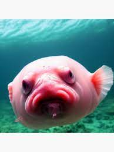

Psychrolutes marcidus (лат.) — глубоководная донная морская рыба семейства психролютовые, которую часто называют одной из самых причудливых океанских глубоководных рыб на планете[1][2]. Распространена в прибрежных водах Австралии[3]. Предположительно обитает на глубинах 600—1200 м у побережья Австралии и Тасмании, где её в последнее время стали всё чаще доставать на поверхность рыбаки[3][4].
Научная классификация Домен: Эукариоты Царство: Животные Тип: Хордовые Класс: Лучепёрые рыбы Отряд: Скорпенообразные Семейство: Психролютовые Род: Психролюты Вид: Psychrolutes marcidus
(Переходите на Рыбы 7
